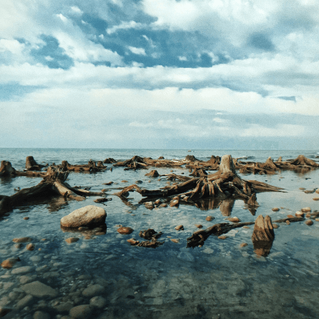

Путешествия по России
Настоящая страна не в выпусках новостей, а здесь.

ваша полка — верхняя
Чего мы там не видели?
По опросам ВЦИОМ, 95% россиян мечтают куда-нибудь поехать, но только
36% планируют провести отпуск в родной стране. Мол, чего мы тут,
дома, не видели? На самом деле, Россия — это целая вселенная с
ласковым морем юга, густыми лесами Саян и суровыми льдами плато
Путорана. А ещё увидеть все эти красоты можно без миллионов на
счету, загранпаспорта и многочасовых перелетов. Как, например, Вера
Башмакова — смелая молодая мама, которая взяла в охапку троих детей,
усадила их в свою «Ладу» и проехала 20 тысяч километров по родной
стране. Мы выбрали и описали некоторые интересные места, достойные
вашего отпуска.
-
Часовых поясов
11
-
Объектов природного наследия ЮНЕСКО
12
-
Объектов культурного наследия ЮНЕСКО
16
-
Природных заповедников
105
-
Аэропортов
241
Куршская коса

-
Здесь, посреди лесов и песчаных дюн, вы сможете увидеть два
водных горизонта — спокойного Куршского залива с одной стороны
и подёрнутого рябью волн Балтийского моря с другой. Уникальная
природная зона на краю российского анклава.
-
На этом Калининградская область не заканчивается. Для
путешественника и исследователя там же по соседству — самая
западная точка России, Балтийская коса, — и немецкое наследие
россыпи небольших приморских городов. Атмосфера здешних мест
исключает суету, окуная в спокойствие природы и запах
стального, прохладного моря.
Кольский
-
Почти весь полуостров находится за Полярным кругом. Саамская
тундра, от которой на юг — тайга, а на север — Ледовитый
океан, прикидывающийся Баренцевым морем.
-
Возможно, вы смотрели Звягинцева и даже слышали историю
арктического фестиваля в Териберке. Возможно, слово «Хибины»
не осталось под снегом школьных воспоминаний об уроках
географии. Возможно, вы не интересовались пронизывающей земную
кору сверхглубокой скважиной, а от апатитов вас давно
накрывает апатия. Но ваша мечта увидеть северное сияние
начинает сбываться с билетом в Мурманск.
Алтай

-
Алтай — одно из красивейших мест в России. В первую очередь
из-за гор: если ехать вдоль хребта, вы увидите склоны,
усыпанные соснами, горные реки и озёра. А если вы откроете в
автомобиле окна, сможете познакомиться с невидимым чудом
здешних мест — горным воздухом.
-
Климат на Алтае умеренный, поэтому ехать сюда лучше всего
летом. Так вы увидите всё разнообразие местной флоры и фауны.
По лесам Алтая бродят лоси, над хребтами летают орлы, а на
равнинах пасутся косули. И знаменитые манулы — тоже обитатели
Алтайского края.
Зимний Байкал

-
Всем известен Байкал как крупнейшее озеро в мире. Многие также
знают, что это самый большой источник пресной воды и одно из
красивейших мест в России.
-
Конечно, это всё так. Но Байкал ещё идеальное место
для соревнований по скийорингу. Это такой вид спорта, когда
лыжник привязывает себя к мотоциклу, и тандем старается
развить как можно бóльшую скорость на льду. В марте 2019 года
на фестивале «Байкальская миля» был поставлен мировой рекорд —
197.011 км/ч.
Карелия
-
Сибирь заканчивается не на Урале, а в Карелии: образующая
тайгу сибирская лиственница не растёт западнее Водлозера. Зато
здесь она вымахивает на 30 метров — леса карельских
национальных парков из-за непроходимых болот никогда не знали
топора. Некоторым соснам уже больше чем полтысячелетия.
Прикоснитесь к живому существу, видевшему солнце раньше, чем
увидал его Иван Грозный. В девственном лесу на сотню
километров не встретишь тропы. А на редких тропинках деревья в
паре метров от земли помечены медвежьими когтями. Чтобы все
знали, кто тут хозяин.